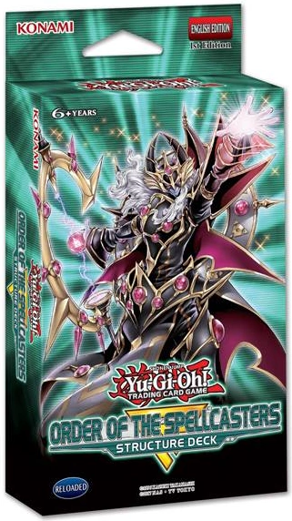

Structure Deck Soulburner is a structure deck that has the majority of Salamangreat cards. I bought three of these structure decks and built a deck out of them but I also bought an additional six cards to make it better. Now the monsters may not be all that terrifying but they can do alot by building a plus three board with one card and maybe a few nagates on field. The main way the deck goes for the win is by OTKing their opponent and that is all thanks to theier fusion monster Salamagreat Chimera. Salamangreat Chimera only has 2800 ATK but it gains the attack of half the combined materials used for its summon and it's attack doubles when attacking a monster whose ATK is different from its original attack. The deck can change the attack of monsters their opponent controls with the link monster Salamangreat Heatleo when it is summoned with a copy of itself and the deck can do that with it's field spell Salamagreat Sanctuary. The decks startegy focuses around summoning their link monsters with the same name to activate additional effects to help them win. The deck is also great at recurring their cards from the GY to gain more advantage. The deck can be countered by stopping them from special summoning monsters or by banishing their link monsters so they can't "Reincarnate Link Summon" their monsters for those additional effects.

Structure deck Order of the Spellcasters is a structure deck that is based around spell counters to summon monsters and negate effects. Most of the monsters are pendulum monsters that can generate spell counters en mass. The pendulum monsters can summon themsleves from the pendulum zone by remvoing spell counters from the card and moving the counters to another card that can have spell counters. The decks boss monster is a 2800 ATK, Level 7 pendulum monster that can negate spell/trap or effects by returning a monster with spell counters to the hand. The boss monster when it has spell counters on it it can't be targeted or destroyed by card effects and it can destroy cards your opponent controls.